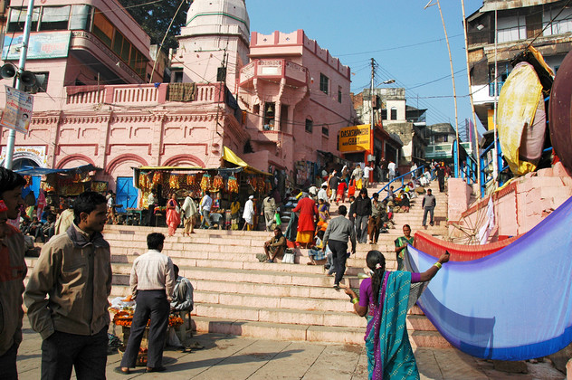

Ein erster Spaziergang in der super-heiligen Stadt Varanasi hat ihr
direkt den Preis für die buchstäblich beschissensten Straßen eingehandelt.
Ansonsten ähnelt hier eine Gasse so sehr der nächsten, dass eine
Orientierung völlig unmöglich ist. Daher mussten wir uns für die Fahrt zum
Ganges wie üblich den Rikschafahrern anvertrauen.

Durch die Trockenheit geschrumpft fließt der Ganges in einem großen
Bogen an Varanasi vorbei. Während das östliche Ufer völlig unbebaut ist
und vermutlich als Schwemmaue dient, bildet die ununterbrochene Kette von
Ghats am westlichen Ufer die Hauptattraktion Varanasis. Die Ghats bestehen
aus steilen Treppen, die bis in den Fluss hineinreichen, und gipfeln in
Palästen oder prächtigen Stadthäusern, die sich die Maharajas ferner
Provinzen als Gebetsfinka errichtet haben.

Hier spielt sich das ganze Leben ab. Mit dem Sonnenaufgang beginnen die
ersten Wahnsinnigen, sich zwischen Abwasser, Müll und Blumenkränzen zu
waschen. Viele Ghats haben lange Rampen zwischen Treppe und Haus, die
gerne zum Trocknen der langen Saris und Tücher verwendet werden. Die
indischen Jungen spielen das absurde Cricket ihrer britischen Stiefvettern
zwischen Kühen und deren Exkrementen.
Wir sind das kilometerlange Ufer in den Tagen, die wir hier hatten,
immer wieder unter Begleitung sich anbiedernder Bootsführer,
Postkartenverkäufer, Masseure usw. entlang geschlendert. Hier treiben sich
auch viele Saddhus (heilige Männer) herum, die in ihren prachtvollen
orange-golden improvisierten Kutten für Farbakzente sorgen.
Bei Sonnenuntergang konnten wir einer Art Hindu-Gottesdienst beiwohnen.
Zur Einstimmung wurde eine halbe Stunde lang "Om Shiva" zur Musik von
"Country Roads" gesungen. Später erlöste uns ein Sänger mit seinem
Tabla-Spieler. Währenddessen bereiteten die Messdiener auf zum Ganges
gerichteten Podesten ritischen Schnickschnack vor. Im Laufe der nächsten
Stunde wurden Blumenblätter gestreut, Räucherstäbchen und Fackeln
geschwenkt, Pfauenfederfächer gewedelt und zu guter Letzt noch auf
Muscheln geblasen. Die Menge war entzückt und in steter Bemühung dem
wirren Klopfen der Tabla durch ihr Klatschen Takt zu geben.